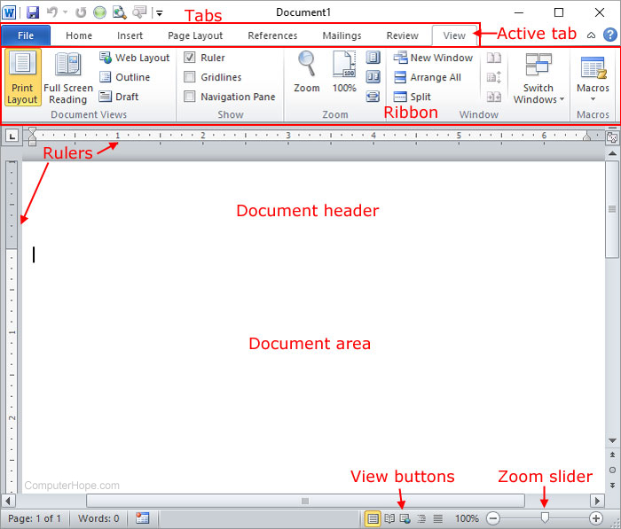
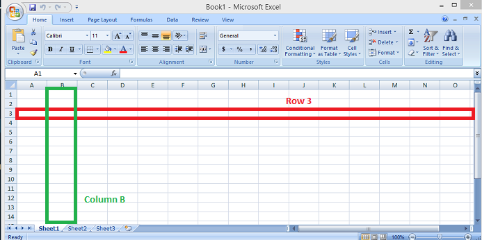
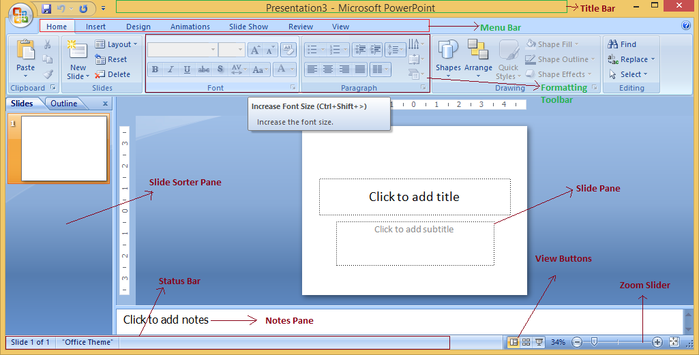

Application Package (Word, Excel, Powerpoint)
MS-Word (Word Processor)
Introduction
MS-Word is a text editing or word processing software developed by Microsoft Corporation, USA under the MS-Office package. Word processing refers to the use of a computer to create, edit, and print documents. A word processor enables us to create a document, store it electronically on a disk, display it on a screen, modify it by entering commands and characters from the keyboard, and print it on a printer. MS-Word is a Windows-based application with many powerful and advanced features to manipulate documents. With the help of this program, we can create any type of documents like letters, reports, theses, manuals, brochures, advertisements, and many other documents. Besides creating, editing, and modifying documents, MS-Word provides special facilities such as checking spelling and grammatical errors, searching for synonyms and antonyms, working with columns, tables, special symbols, pictures, graphs, charts, and more. The document created with MS-Word has “.doc” extension, while the newer version has the “.docx” extension.
Features of MS-Word
- a. Fast operation:
- Since MS-Word is a digital text editing software, there is no mechanical movement associated, making it faster in operation.
- b. Editing text feature (Character formatting):
- Operations like insert, delete, modify, undo/redo, and find/replace can be performed easily. We can customize our text document in various styles like bold, italic, underline, different font sizes, colors, and styles.
- c. Permanent storage:
- Files and documents can be electronically stored on a disk or other storage media, allowing for retrieval whenever required.
- d. Graphics:
- MS-Word allows us to insert several objects like pictures and graphs anywhere in the document.
- e. OLE (Object Linking and Embedding):
- OLE is a technology used to share information between programs through objects like charts, equations, pictures, audio, and video files.
- f. Mail merge:
- Mail merge is a useful tool that allows us to produce multiple letters, labels, envelopes, and more using information stored in a list, database, or spreadsheet.
- g. Searching:
- MS-Word allows us to search for any word or text and replace or delete it throughout the entire document.
- h. Printing:
- MS-Word allows users to print documents created at any time.
- i. Formatting a document:
- Word has various tools that help format a document to enhance its readability and appearance. This includes searching and replacing text, displaying rulers, changing paragraph alignment, line spacing, creating bullets, and numbering. We can also add borders, shading, and watermarks to denote confidential information.
- j. Spelling and Grammar checker:
- MS-Word provides features to help produce professional and error-free documents by checking for grammatical and spelling errors, notifying users with colored wavy lines (red or green).
- k. Use of thesaurus:
- MS-Word’s thesaurus allows users to look up synonyms and antonyms quickly, enabling automatic replacement of words.

MS-Excel (Spreadsheet)
Introduction
MS-Excel is a spreadsheet software in the Microsoft Office suite that allows users to store, organize, and analyze numerical and text data. It is part of the MS-Office package. A spreadsheet program presents information clearly and can be used to perform mathematical calculations using various formulas and equations. Excel also allows us to convert spreadsheet data into various charts like bar graphs, columns, and others. It can be used to calculate data according to user needs, such as salary sheets, income and expenses statements, balance sheets, budget preparation, and grade and percentage calculations. Some application areas of Excel include:
- Basic mathematical calculation
- Financial modeling and analysis
- Statistical analysis
- Scientific and engineering calculations
- Graphic presentation and more
The extension of MS-Excel files is “.xlsx” and “.xls”.
Common Terminologies Used in Spreadsheet
- Worksheet (Spreadsheet):
- A worksheet is a collection of rows and columns used to list, organize, and calculate data.
- Workbook:
- The files used in a spreadsheet are collectively known as a workbook. Workbooks are made up of several worksheets. By default, one workbook has three worksheets.
- Cell:
- The intersection of rows and columns is called a cell. To refer to a cell, enter a column letter followed by a row number (e.g., C2). The cell where the intersection occurs is called the active cell.
Features of MS-Excel
- Multiple Worksheets:
- It facilitates working with multiple worksheets at a time.
- Charts and Graphs:
- It allows the creation of different types of charts and graphs.
- Data Management:
- It helps organize and manage large volumes of data.
- Automatic Calculations:
- Allows performing calculations automatically using custom formulas and equations.
- Data Sorting:
- It enables easy sorting of data in ascending and descending order.
- Object Linking and Embedding:
- Supports high-level features like object linking and embedding.
- Data Formatting:
- It allows formatting data to make it more attractive using tools like font size and color.
- Basic Operations:
- Simple computing operations such as cut, copy, paste, find, and replace can be easily performed.
- Internet Features:
- Includes internet features such as a web toolbar.
- Electronic Storage:
- It allows storing data electronically on any storage medium.
Cell Reference in Excel
A cell location in a spreadsheet is referred to as its cell reference. To find a cell reference, look at the column heading to find which column the cell is in and across to find which row it is in. The cell reference is a combination of the column letter and row number, such as A1, B3, Z9. The column letter should always come first when writing a cell reference. This is particularly important when writing formulas or addressing cells. For example, to add values 3 and 2 located in A1 and A2 respectively, instead of writing A3=3+2, we write A3=A1+A2.
Types of Cell Reference
- Relative Cell Reference:
- A relative cell reference identifies the location of a cell or group of cells. By default, a spreadsheet cell reference is relative, meaning formulas and functions can be copied and pasted to other cells. Examples include A1, B4, G9, etc.
- Absolute Cell Reference:
- An absolute cell reference identifies a specific cell location, indicated by a dollar sign ($) before the column letter and row number (e.g., $A$2, $G$9). This keeps the cell reference fixed when copying formulas or functions.

MS-PowerPoint (Presentation)
Introduction
PowerPoint is the presentation software in the Microsoft Office suite. With PowerPoint, we can create dynamic and professional presentations using pre-defined layouts, themes, and templates. PowerPoint includes all the features needed to produce professional-looking presentations. A PowerPoint presentation consists of a series of slides that contain information we want to communicate with our audience. This information can include text, images, graphs, charts, videos, audio, and more. The presentation program can also be used as a supplement to older visual aid technologies such as pamphlets, handouts, posters, and chalkboards.
The extension of PowerPoint files is “.ppt”, while later versions use “.pptx”. Alternative software for MS-PowerPoint includes MagicPoint, Apple Keynote, IBM Lotus, and Harvard Graphics.
Features of MS-PowerPoint
- Data Formatting:
- Formatting helps make documents much more attractive, effective, and interactive using tools like font styles, colors, and hyperlinks.
- Basic Operations:
- Supports simple computing operations such as cut, copy, paste, find, and replace.
- Pre-defined Layouts:
- Allows users to use pre-defined layouts, themes, and templates, which aids in faster development and design of presentations.
- Slide Transitions:
- Slide transitions and effects can be used for further requirements.
- Custom Animation:
- Users can create their own custom animations.
- Hyperlink Support:
- Supports both internal and external hyperlinks.
- Graphical Representation:
- Different bars, graphs, and charts can be used to convey detailed and precise information.
- Internet Features:
- Includes internet features such as a web toolbar, online help, and web linking.

Important Questions
- What are the main features of MS-Word?
-
MS-Word offers a variety of features that enhance document creation and formatting, including:
- Text Formatting: Options for font styles, sizes, colors, and paragraph alignment.
- Templates: Pre-designed templates for different types of documents like resumes, reports, and letters.
- Spell Check and Thesaurus: Tools for checking spelling and providing synonyms.
- Images and Graphics: Ability to insert and edit images, shapes, and SmartArt.
- Tables: Tools for creating and formatting tables to organize data.
- Mail Merge: A feature for creating personalized documents for mass distribution.
- Review Tools: Options for comments, track changes, and comparing documents.
- How does mail merge benefit users?
- Mail merge benefits users by allowing them to create personalized documents for a large number of recipients efficiently. This feature automates the process of merging a template document (like a letter) with a data source (like a list of names and addresses). Users can quickly generate individualized letters, labels, or envelopes, saving time and reducing the likelihood of manual errors in repetitive tasks.
- What is the difference between .doc and .docx file extensions?
- The .doc file extension represents the older binary file format used by Microsoft Word prior to the introduction of Word 2007. It is less efficient in terms of file size and lacks some advanced features. The .docx extension, introduced with Word 2007, is based on XML and allows for better data management, improved file compression, and compatibility with other applications. .docx files generally have smaller sizes and support features like improved document recovery.
- What is OLE and how is it used in MS-Word?
- OLE (Object Linking and Embedding) is a technology that allows users to insert and link objects from one application into another. In MS-Word, OLE can be used to embed or link content from other applications, such as Excel spreadsheets, PowerPoint presentations, or images. This allows users to create documents that contain dynamic content, meaning that updates to the original object can be reflected in the Word document if linked.
- What are the key features of MS-Excel?
-
Key features of MS-Excel include:
- Spreadsheet Layout: Cells organized in rows and columns for data entry and analysis.
- Formulas and Functions: Built-in functions for calculations, statistical analysis, and data manipulation.
- Charts and Graphs: Tools for visualizing data through various types of charts.
- PivotTables: A feature for summarizing and analyzing large data sets with ease.
- Data Validation: Options for controlling the type of data entered into cells.
- Conditional Formatting: Allows users to format cells based on specific conditions or criteria.
- How do you perform a basic calculation in MS-Excel?
-
To perform a basic calculation in MS-Excel, you can enter a formula directly into a cell. For example, to add two numbers, you would:
- Select a cell where you want the result to appear.
- Type the equals sign (=) followed by the formula, such as =A1 + A2 (where A1 and A2 are the cell references of the numbers you want to add).
- Press Enter, and the calculated result will be displayed in the selected cell.
- Explain the difference between relative and absolute cell references.
- In MS-Excel, a relative cell reference adjusts automatically when the formula is copied to another cell. For example, if you use =A1 + B1 in cell C1 and copy it to C2, it will change to =A2 + B2. An absolute cell reference, on the other hand, remains constant regardless of where the formula is copied. This is indicated by adding dollar signs (e.g., $A$1). If you copy a formula with an absolute reference from C1 to C2, it will still refer to $A$1 and $B$1.
- What are the uses of MS-PowerPoint?
-
MS-PowerPoint is used for creating presentations that can include text, images, videos, charts, and diagrams. Its primary uses include:
- Creating slideshows for business meetings and conferences.
- Educational presentations for teaching and training purposes.
- Visual storytelling for marketing and promotional activities.
- Collaborative presentations that can be shared and edited by multiple users.
- What are the common file extensions for PowerPoint presentations?
-
Common file extensions for PowerPoint presentations include:
- .ppt: The older binary file format for PowerPoint presentations.
- .pptx: The newer XML-based format introduced in PowerPoint 2007.
- .pps: A PowerPoint presentation file that opens in slideshow mode.
- .ppsx: The slideshow format for .pptx presentations.